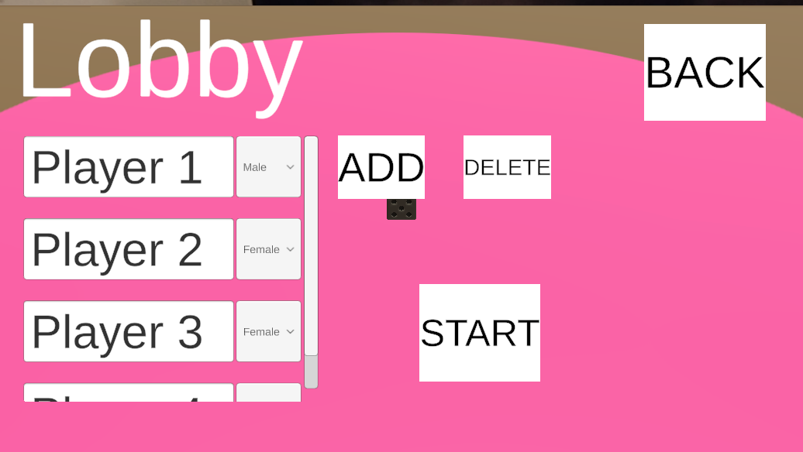

Name:
Board game
Type:
School / Personal project
Members:
Oskar Junnola
Timeframe:
4 months
Role:
All
Board Game
Information
This board game is a fun party game to play with friends. You race to the end of the board against the other players while completing different tasks. The tasks' icludes different allocation. Varying from solo tasks to all players.
Development process August 2025 - December 2025
Oskar Junnola: All
This board game started as an idea of a party game to play with friends when spending time with them. Because playing the game might include a large group of people I decided that, playing it from a TV with a big screen would be the best way to achieve a good and fun experience.
I started by creating a simple UI, a game manager and a player class with an ID, a slot number which indicates where the player is on the board. For the player I used a model of a pawn I had done. Then I added some slots the player can move to. The game manager uses events to control the turns and actions in the game. After a simple version of the player movement was done I created the tasks. See tasks below!
Tasks are created with a scriptable object with information about the type of task it is. And is saved into a slot on the board. More information on this below. I then of course needed something to show the task to the player, so I created a UI panel for it. The first tasks were only timed. After some more UI work and adding functionality. The player was shown the task corresponding to the slot, the timer could be started and when the task was done the next player's turn was up.
After the basic functionality of the game was done I started working on switching the camera between players and eventually the die. This was done with Cinemachines virtual cameras (Cinemachine 2025). I created a camera manager that switches between cameras easily. A die camera and cameras for the players were added.
At this time the rolling of the die was done simply by getting a random value and telling the player to move that amount. So I created a die model with Blender. With the help of Youtube videos done by Midnite Oil Software LLC (2023) and Devsplorer (2020) I was able to create a script that checks the orientation of the die using a combination of Cross- and Dot product. After the dice was implementented a punisment for not completing the task. The player simply moves backwards half the steps he rolled.
After the die rolling was done. The main mechanics were completed. I then started working on a lobby where players can be added and deleted. See lobby below. For this I created a PlayerGhost class which acts as the player and it has a refrence for it's pawn on the board.
I then added a audio system which currently uses temporary audio clips and modes like Normal and Drinking(K-18) for different usage. After that it was time to take a deeper dive into the tasks. At this time the game had only timed tasks. I added more task types, timed, non-timed and a curse. The tasks can also be directed at different groups of players.
During the development process the game was tested after additions and modifications on PC and sometimes on Mobile. Now it was time to move to testing with an Android TV. Because Android TVs use .APK for apps as does all android devices. It was farely simple to download the build to the TV. All that was needed was enabling some tabs in the project's player settings, enabling developer mode on the TV. Attaching a laptop to the TV and building to it.
After testing I discovered The UI navigation didn't work correctly with the TV remote and that the die sometimes couldn't get the number on top.
Core mechanics
Lobby
The lobby adds players to the game and deletes them. The lobby UI has a space to add all the players, buttons to add and remove players from the lobby. Above is a picture of the lobby. The lobby adds a PlayerGhost prefab to the UI. The prefab has input text area for the name, and a dropdown menu for the gender of the player. The playerGhost component is then added to PlayerList in GameManager.
The PlayerGhost has all the players variables. For example Name, ID and the slot number AKA position on the board. The PlayerGhost controls it's pawn on the board.
Tasks
The tasks are created with ScriptableObjects.
Fields
Task type
The task type indicates what kind of task it is. There are currently 3 different types. Timed, Non timed and curse.
Timed is a task that is done under a time limit.
Non timed is a normal task with no time limit.
Curse is set to the player in turn. A random player is selected and the player with the curse has to do the same solo tasks as the player selected.
Task allocation
This indicates who the task is for. Curretly there are Solo, Player to Player, Gender and All.
Text / The task it self
Variables
The are multiple variables for the tasks. A random variable is selected for one slot on the board.
For timed tasks the variables are used for the timer and for curses it indicates how many rounds it lasts.
Board stage
Indicates where on the board the task can appear for the first time. It is ranged from 1 to 3.
When the game is loaded. The tasks are loaded from the resources. Then when the game starts, IDs for the possible tasks are created. Going through all the variables to get all possible variations of the tasks. When creating the slots on the board the game takes a random task checks the board stage and check the ID if it is already used.
Die
When the die is rolled it applies a random force and torque to it. Then it's orientation is checked with Vectors' cross product and -dot product.
Issues
During testing on TV there was an bug where the die will sometimes give a wrong number. This bug hasn't appeared when testing with a PC.
Future
Next step in the development is to create the final textures for all models, create new tasks and new task types. For example there is a plan to implement a Trivia task type.
Gameplay
references
Cinemachine. 2025. Powering cameras for real-time productions. Features. Unity. WWW-document. Available at: https://unity.com/features/cinemachine. [Accessed 28.11.2025].
Devsplorer. 2020. Detect Upper Face Of Dice In Unity Using Vector Operations | Unity Tutorial. Youtube. Video. Available at: https://www.youtube.com/watch?v=HEUdIavIvlQ&t=465s. [Accessed 22.10.2025].
Midnite Oil Software LLC. 2023. Unity Tutorial - Creating Rollable Dice. Youtube. Video. Available at: https://www.youtube.com/watch?v=VhR6FoQXHX4. [Accessed 22.10.2025].
Icons from Font Awesome